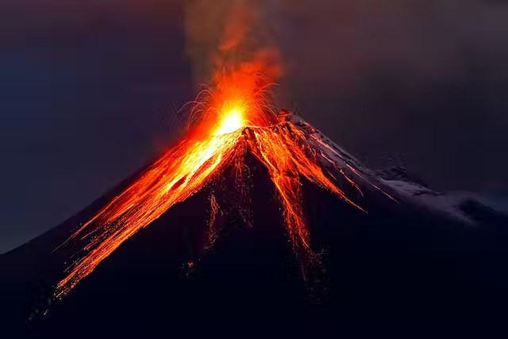

A volcano is a rupture in the crust of a planetary-mass object, such as Earth, that allows hot lava, volcanic ash, and gases to escape from a magma chamber below the surface. On Earth, volcanoes are most often found where tectonic plates are diverging or converging, and because most of Earth's plate boundaries are underwater, most volcanoes are found underwater. For example, a mid-ocean ridge, such as the Mid-Atlantic Ridge, has volcanoes caused by divergent tectonic plates whereas the Pacific Ring of Fire has volcanoes caused by convergent tectonic plates. Volcanoes can also form where there is stretching and thinning of the crust's plates, such as in the East African Rift and the Wells Gray-Clearwater volcanic field and Rio Grande rift in North America. Volcanism away from plate boundaries has been postulated to arise from upwelling diapirs from the core–mantle boundary, 3,000 kilometers (1,900 mi) deep within Earth. This results in hotspot volcanism, of which the Hawaiian hotspotis an example. Volcanoes are usually not created where two tectonic plates slide past one another.
